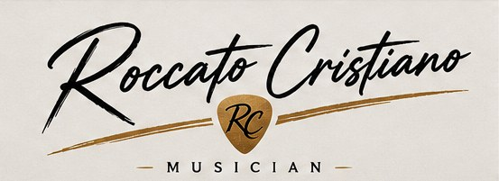
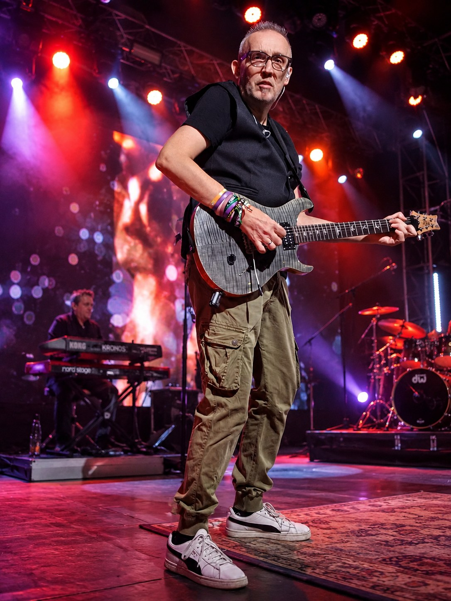
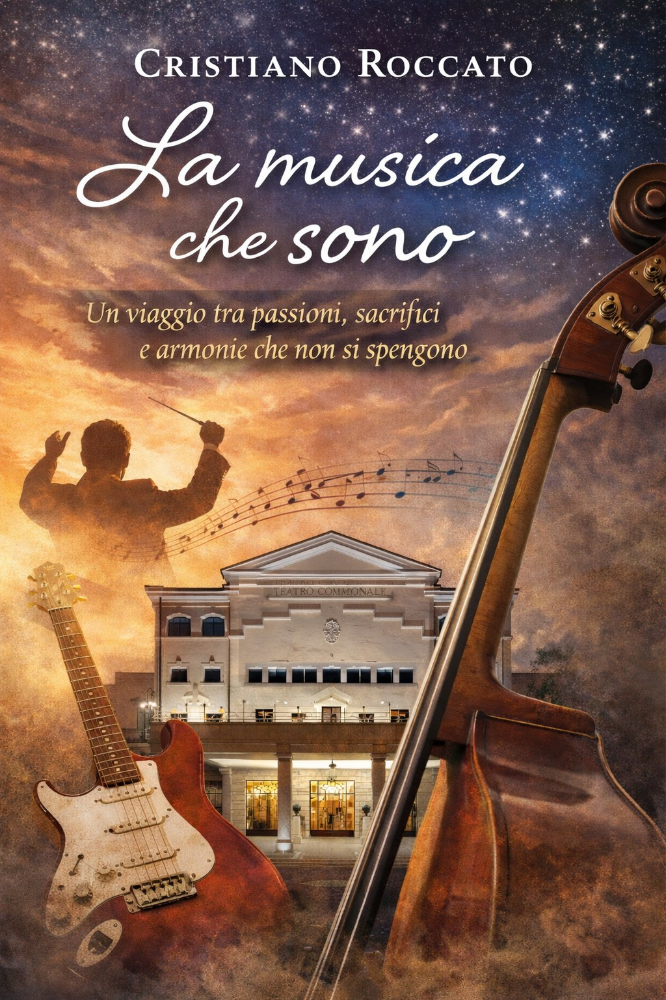
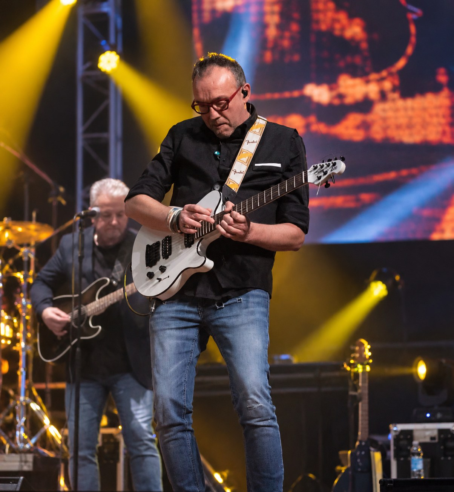
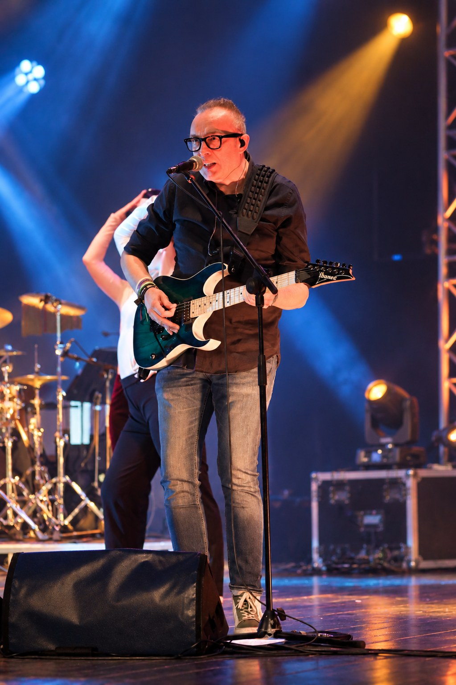
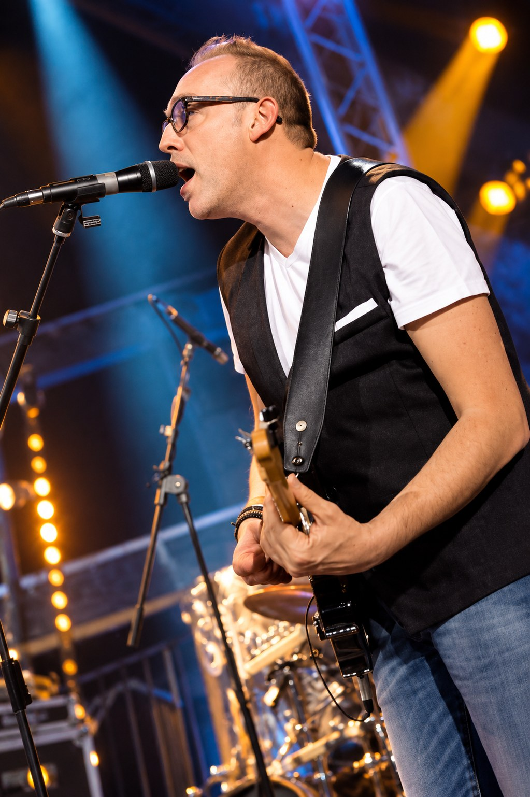
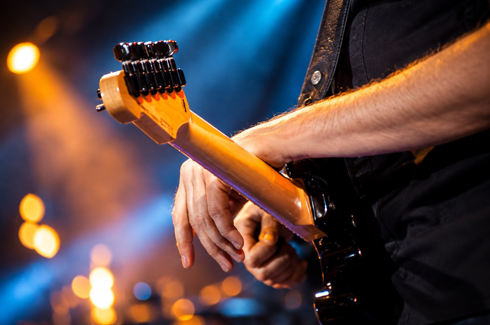
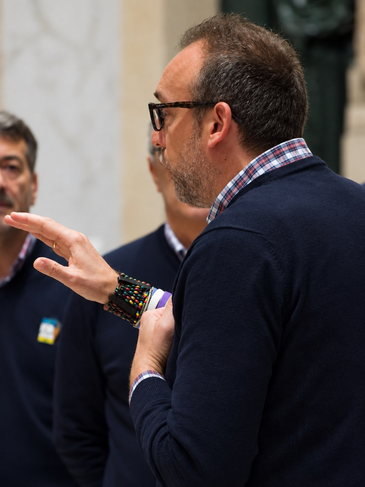

BRM & Marzia Lucchetta
Pop e rock, energia live e una band costruita sull'intesa musicale.

MUSICIAN • AUTHOR • CHOIR DIRECTOR
La musica non è semplicemente ciò che faccio.
È ciò che sono.

LA MIA STORIA
La chitarra entra nella mia vita a cinque anni. Dai primi passi sul palco agli studi di contrabbasso, dalle orchestre ai gruppi rock, dall'insegnamento alla direzione corale, ogni esperienza ha aggiunto una voce alla stessa storia.
Diplomato nel 1995, ho attraversato mondi musicali diversi: classica, pop, rock, canto corale, arrangiamento e formazione. La chitarra resta il mio primo amore, il palco il luogo in cui tutte queste strade tornano a incontrarsi.
«La musica non è semplicemente ciò che faccio. È ciò che sono.»
PROGETTI
Pop e rock, energia live e una band costruita sull'intesa musicale.
Un progetto dedicato alla musica di Lucio Battisti.
Voce e chitarra in una dimensione intima ed elegante.
Un progetto live essenziale, diretto e coinvolgente.
Direzione artistica, canto di montagna e passione per la coralità.

IL LIBRO
Un viaggio tra passioni, sacrifici e armonie che non si spengono.
Un viaggio autobiografico attraverso vocazione, ostacoli, maestri, amicizie, famiglia e palcoscenici. Non soltanto la storia di un musicista, ma il racconto di quanto la musica possa diventare identità.
Dal bambino con la chitarra alla direzione corale, dalle tournée alla scuola di musica, fino alla famiglia: pagine in cui vita e musica suonano insieme.
DAL VIVO
Concerti, presentazioni del libro e appuntamenti corali saranno pubblicati qui.
GALLERY





CONTATTI
Per concerti, collaborazioni, presentazioni del libro e progetti musicali.